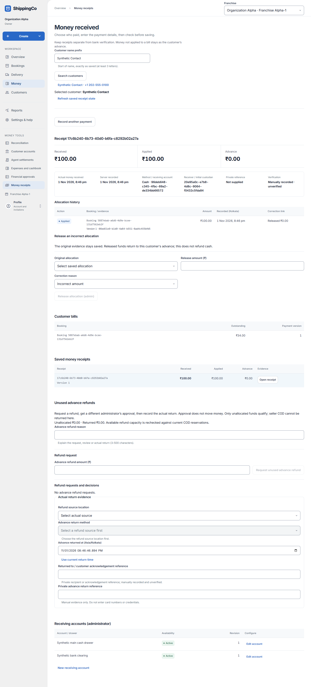
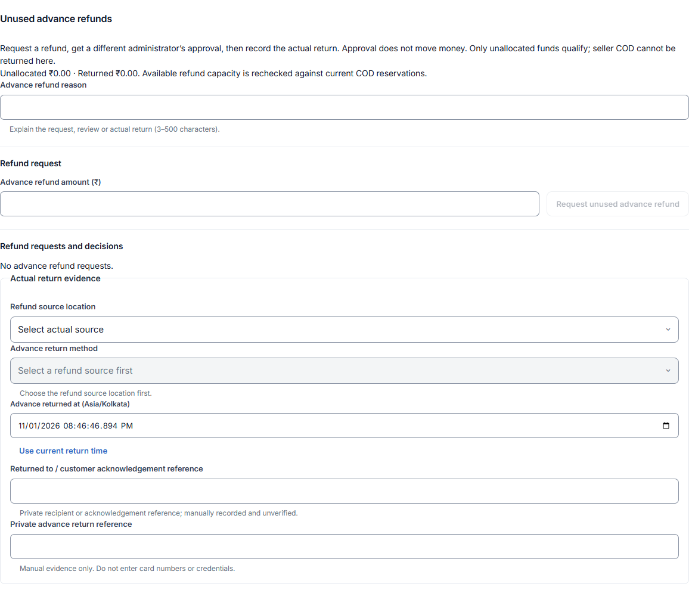

Returning unused customer advance
What this helps you do
- Request and record an actual return of unused customer advance.
Open this feature
- Money > Money receipts > select customer > Open receipt > Unused advance refunds.
- Check the active branch first. Available actions depend on your role and the selected record.


Request unused advance back
- Inspect unallocated and already returned money on the receipt. The illustrated receipt has no unused advance, so its refund request is correctly unavailable.
- Enter Advance refund reason of 3–500 characters and positive Advance refund amount in rupees, within available unallocated advance. Select Request unused advance refund. Current seller COD reservations are checked.
Independent decision and actual return
- A different current franchise administrator reviews the request and reason, then Approve advance refund or Reject advance refund. Approval is not a transfer.
- For an approved request choose Refund source location, then an allowed Advance return method. Enter the actual returned time in Kolkata. Use current return time only if accurate.
- Enter Returned to / customer acknowledgement reference and Private advance return reference. Use real private references, not card numbers or credentials. Accepted reference characters include letters, numbers, colons, underscores and hyphens.
- After money was actually returned, enter the reason and Record actual advance return. Check returned total and event history. Load remaining history before a decision if requested.
Fields and when to use them
These fields belong to the actions above. Complete the fields for your selected action; optional filters may stay blank.
- Advance refund reason: Explain why you are making this request or change. Use the real business reason. Use when shown for the selected action.
- Advance refund amount (₹): Enter the actual amount in rupees. Use no more than two decimal places. Use when shown for the selected action.
- Refund source location: Select the refund source location involved in this action; check its account and responsible person. Use when shown for the selected action.
- Advance return method: Choose how the money was paid or checked. Use the option that actually applies. Use when shown for the selected action.
- Advance returned at (Asia/Kolkata): Enter when the event really happened. Use the time zone named in the label. Use when shown for the selected action.
- Returned to / customer acknowledgement reference: Use the reference from the matching saved record or real supporting document. Do not invent one. Use when shown for the selected action.
- Private advance return reference: Use the reference from the matching saved record or real supporting document. Do not invent one. Use when shown for the selected action.
If you need to retry
- No records: check branch, account or customer and filters. Use Load more where offered before deciding a record is missing.
- Invalid or missing value: read the form message, correct the draft, then review amounts and references again.
- Uncertain save: use the offered retry for the same request. Do not create a second payment, return, expense or application to guess whether the first saved.
- Changed evidence or policy: refresh current records and review them before a new request. A saved report retains its captured figures; create another report for current results.
About this guide
Checked against the current screen code on 1 November 2026. This explains app behaviour, not tax or accounting advice. Buttons and records can differ by role.